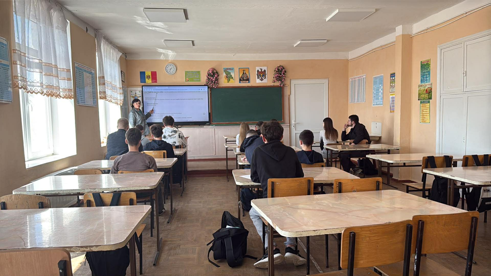
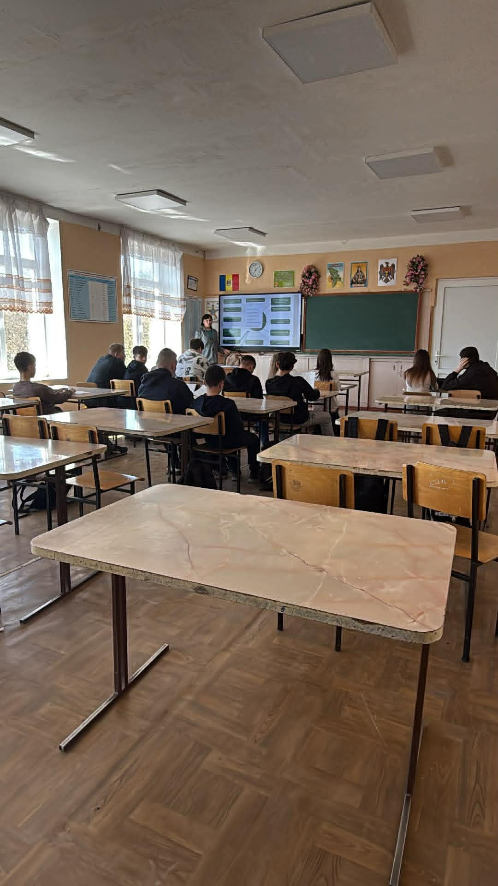
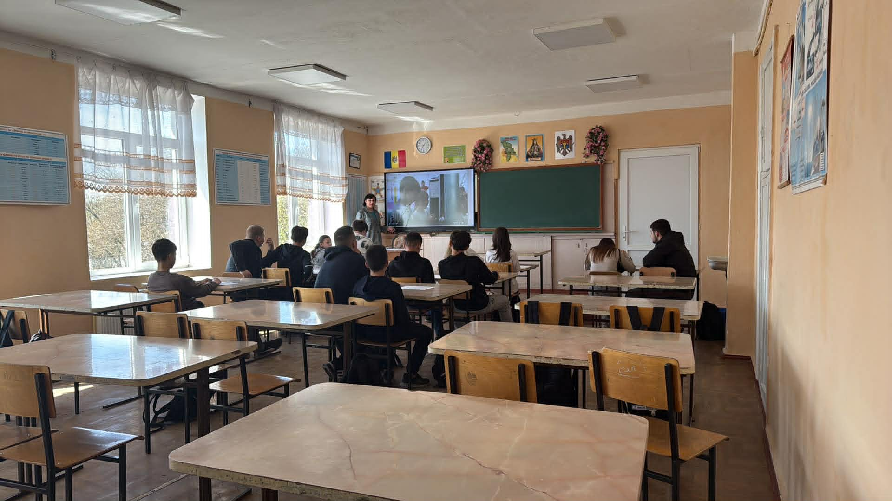
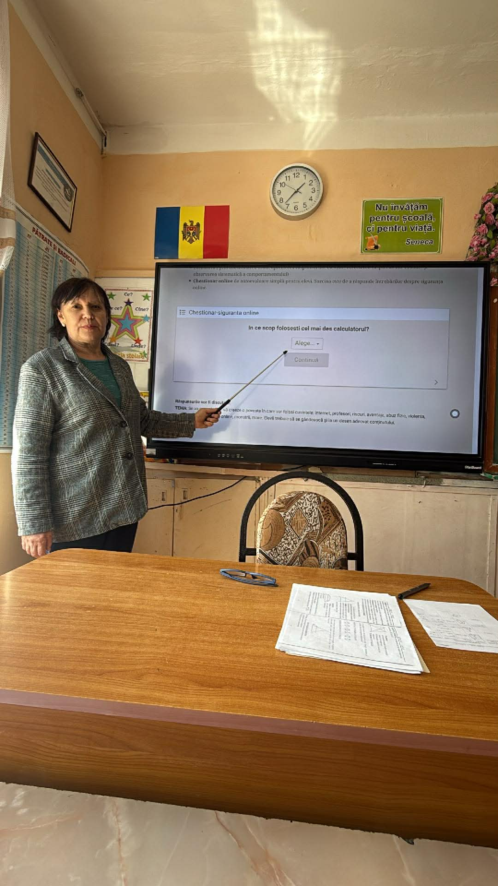
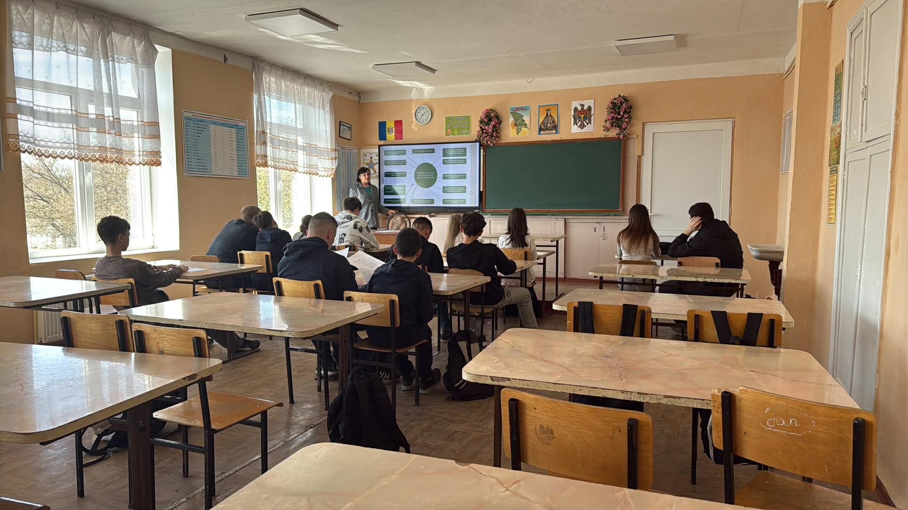
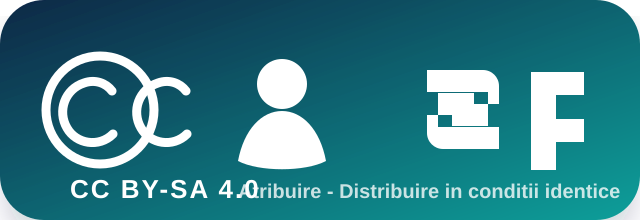

Profil profesional
Profesor dedicat invatarii centrate pe elev, cu focus pe dezvoltarea competentelor digitale si a colaborarii.
Zavtoni Olga | DigiProf-B
Dezvoltarea competentelor digitale pedagogice prin invatare exploratorie, creativitate si impact real in clasa.
Context educativ
Despre mine
Creez experiente de invatare care imbina tehnologia cu pedagogia. Portofoliul reflecta evolutia mea digitala, concentrarea pe accesibilitate si cultivarea gandirii critice la elevi.
Profesor dedicat invatarii centrate pe elev, cu focus pe dezvoltarea competentelor digitale si a colaborarii.
Integrez resurse interactive, evaluare formativa si scenarii de invatare exploratorie in activitati curente.
Instrumente vizuale, design instructional, AI in educatie, accesibilitate digitala si invatare gamificata.
Evolutia mea digitala
Dezvoltarea mea digitala include instrumente creative, evaluare interactiva si integrarea AI in lectii.
Structurare cursuri, gestionare teme si feedback.
Resurse vizuale, prezentari si scenarii interactive.
Quizuri formative si invatare gamificata.
Idei creative, adaptare continut si feedback.
Adaptari pentru invatare incluziva si diferentiata.
Artefacte reprezentative
Linkuri extrase din resursele portofoliului.
Resursa exploratorie + link public.
Plan de lectie, materiale, raport si reflectie.
Joc digital cu feedback si motivatie.
Scenariu incluziv si reflectii finale.
Plan interdisciplinar si colaborare intre discipline.
Instrumente de evaluare si feedback pentru proiecte STEAM.
Organizare curs online/blended si module tematice.
Scenariu complet pentru cursul blended.
Raport complet de implementare si analiza datelor.
DIGITAL SAFETY 2026
Curs online/blended dedicat siguranței digitale, cu evaluare formativă și activități practice.
Participare
Progres module
19 din 20 de elevi au participat activ la activitățile cursului.
18 activități finalizate confirmă ritm bun de lucru și implicare.
Scorul mediu 8.9/10 indică înțelegere bună și transfer practic.





Unitatea 9 | Implementare
Implementarea cursului online/blended Digital Safety a urmărit aplicarea conținutului digital în contexte reale de învățare, combinând activități față în față, resurse online, evaluare formativă și reflecție ghidată.
Lecția a început cu activarea cunoștințelor despre riscurile online, a continuat cu analiză de situații reale, activitate practică pe resurse digitale și s-a încheiat cu quiz formativ și reflecție.
În clasă au fost discutate exemple de comportamente sigure, iar în Google Classroom elevii au accesat materiale, au completat chestionare și au transmis răspunsuri individuale.
Evaluarea a combinat rezultatele Quizizz, răspunsurile din Google Forms, observarea participării și analiza activităților finalizate în platformă.
Publicarea resurselor Canva și a instrucțiunilor în Classroom.
Discuții ghidate despre identitate digitală, parole și riscuri.
Chestionar Google Forms, scenarii practice și sarcini diferențiate.
Quiz final, feedback individual și reflecție asupra comportamentului online.
Date și interpretare
Datele au fost colectate din surse complementare pentru a evita o interpretare superficială: prezența și activitatea în Classroom, exporturi Google Forms, rezultate Quizizz și fișe de observație.
Numărul total de elevi incluși în cursul Digital Safety.
Sursă: listă clasă și Google ClassroomElevi care au accesat resursele și au transmis cel puțin o sarcină.
Sursă: analytics Classroom și observațieSarcini completate integral în perioada de implementare.
Sursă: Google Forms și ClassroomMedia rezultatelor obținute la evaluarea formativă finală.
Sursă: Quizizz / Google FormsInterpretare
Participarea de 95% arată că majoritatea elevilor au interacționat activ cu materialele. Finalizarea a 18 activități sugerează ritm bun de lucru, iar scorul 8.9/10 confirmă înțelegerea conceptelor de bază: parole sigure, comunicare responsabilă, recunoașterea riscurilor și protecția datelor personale.
Incluziune digitală
Activitățile au fost proiectate pentru participare echitabilă, siguranță emoțională și acces la învățare pentru elevi cu ritmuri și nevoi diferite.
Instrucțiuni scurte, exemple clare și termeni explicați în limbaj accesibil.
Scheme Canva, capturi, pași vizuali și contrast ridicat pentru citire.
Elevii au putut răspunde prin text, discuție orală sau alegere ghidată.
Elevii cu dificultăți au primit timp suplimentar și sprijin pas cu pas.
OER DigiProf-B
Portofoliul este structurat ca resursă publică reutilizabilă pentru profesori aflați la nivel A2-B1 DigCompEdu, interesați de siguranță digitală, învățare blended și evaluare formativă.
Resursele pot fi reutilizate, adaptate și distribuite gratuit în contexte educaționale, cu menționarea autorului și păstrarea aceleiași condiții de distribuire.
Model pentru organizarea unui curs blended în Classroom.
Deschide structuraChestionare, quizuri și interpretare formativă a datelor.
Deschide instrumenteleCadru „Ce? / Și ce? / Și acum ce?” pentru portofoliu.
Deschide modelul
„Acest material a fost realizat de Zavtoni Olga în cadrul programului de formare DigiProf. Materialul are un scop strict educațional. Toate resursele externe utilizate au sursa menționată. Permit reutilizarea și adaptarea acestui material de către alți profesori, atât timp cât este menționat autorul original și noul material este distribuit gratuit, sub aceeași condiție.
Licență: Creative Commons Atribuire-DistribuireÎnCondițiiIdentice 4.0 Internațional (CC BY-SA 4.0).”
AI Integration & Ethics
Inteligența artificială a fost folosită ca sprijin pentru planificare, formularea întrebărilor și design vizual, dar deciziile finale au rămas validate pedagogic de profesor.
Generare de idei pentru scenarii, întrebări formative și structurarea reflecției.
Compararea formulărilor, simplificarea textelor și adaptarea explicațiilor.
Organizarea materialelor vizuale și propuneri de layout pentru elevi.
Propune 5 întrebări formative despre siguranța parolelor pentru clasa a VIII-a.
Simplifică instrucțiunile pentru elevi cu dificultăți de învățare, păstrând sensul.
Generează criterii de observare pentru participarea elevilor într-o activitate blended.
DigCompEdu B2
Dovezile din portofoliu sunt corelate cu descriptorii DigCompEdu relevanți pentru implementarea și evaluarea cursului Digital Safety.
Interpretarea datelor din Classroom, Forms, Quizizz și observație.
Utilizarea rezultatelor formative pentru ajustarea activităților viitoare.
Adaptări pentru ritm diferit, suport vizual și alternative de răspuns.
Activități despre siguranță online, identitate digitală și protecția datelor.
Reflectii
Am creat resurse digitale si scenarii exploratorii care sustin invatarea autonoma si feedbackul imediat.
Elevii au fost mai implicati, iar datele au aratat progres vizibil si motivatie crescuta.
Voi extinde activitatile colaborative si voi integra mai mult accesibilitatea in designul digital.
Bune practici
Organizare eficienta, transparenta si feedback rapid.
Evaluare formativa, motivatie si invatare prin joc.
Adaptari digitale pentru stiluri diverse de invatare.
Generare de idei, resurse si feedback personalizat.
Plan CPD
In urmatoarele 3 luni, voi crea 3 scenarii digitale interactive pentru clase diferite, folosind Genially si Canva.
Pana la finalul semestrului, voi integra doua instrumente AI in proiecte de invatare pentru feedback personalizat.
Voi dezvolta un ghid de accesibilitate digitala aplicat in activitatile online cu elevii.